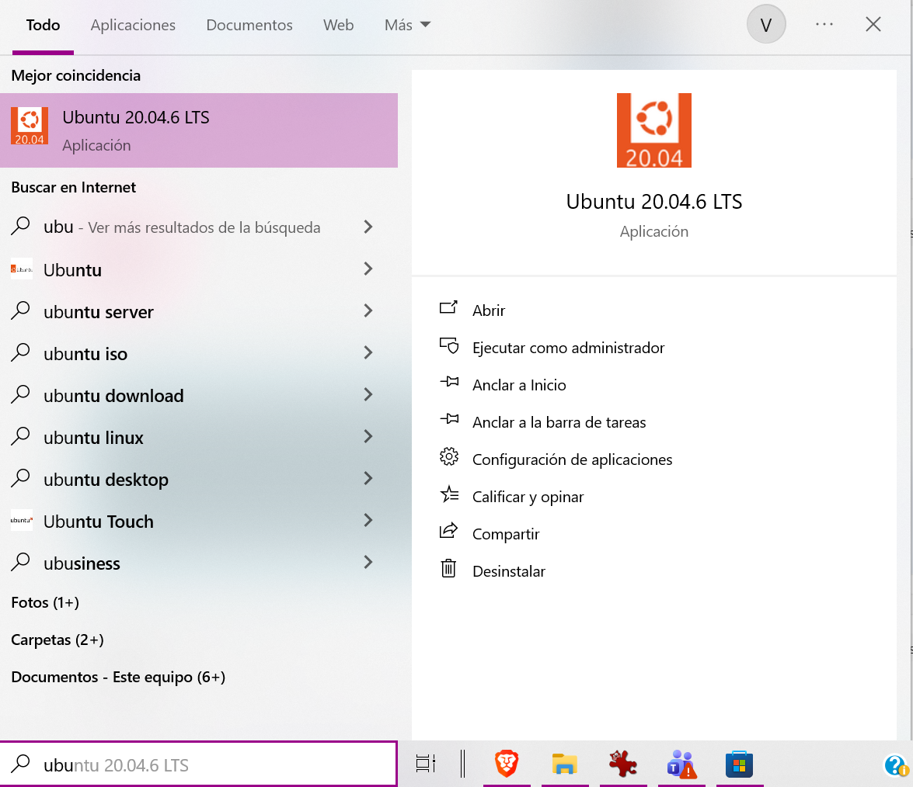
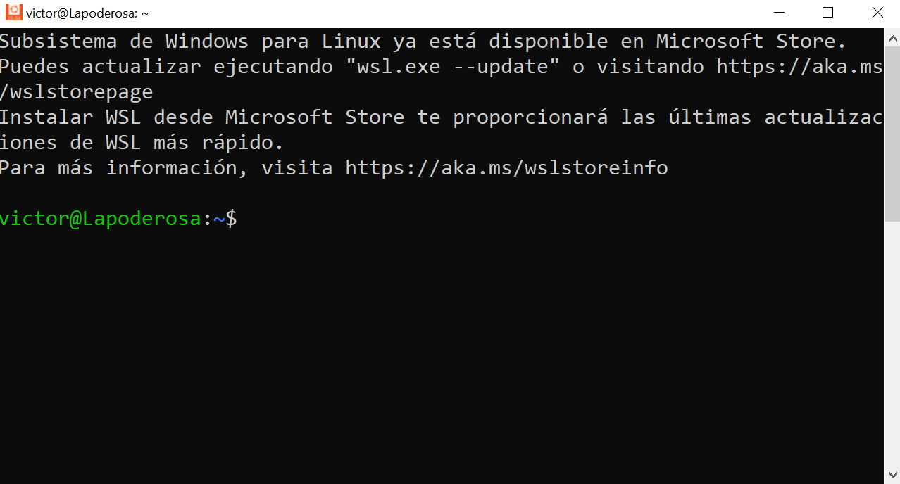
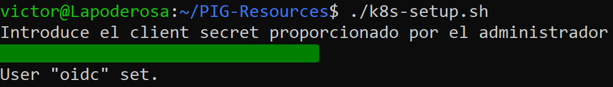
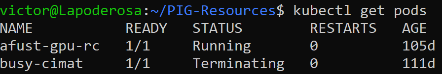

Usando Windows
Descargar terminal de GNU/Linux (WSL)
Para poder realizar este tutorial en Windows, primeramente debemos instalar un subsistema Linux en Windows. Este lo podemos encontrar en la Microsoft store. Lo podemos encontar en el buscador de nuestro sistema operativo como se ve en la siguiente imagen

Una vez abierto Microsoft store, en el buscador ingresamos wsl y nos saldran opciones de subsistemas Linux (distribuciones), se puede eligir la que prefiera el usuario

Para instalar una distribucion pasamos el raton por encima de la distribucion deseada y en la esquina derecha aparecera un boton para instalarla. Al terminar la instalacion podemos usar el buscador de Windows para encontrar la distribucion en nuestro sistema

En este turorial usaremos la distribucion Ubuntu 20.04.6 TLS. Al abrirla, se les abrira una ventaja como la siguiente

Instalacion y configuracion
Con nuestra subsistema Linux instalado, procedemos a la instalacion del cliente de kubernetes y su configuracion.
Empezamos clonando el repositorio de github y entramos al directorio descargado
git clone https://github.com/hiramcastillo36/PIG-Resources.git
cd PIG-Resources
Ahora instalamos lo necesario corriendo el archivo wsl-setup.sh. Con el primer comando lo hacemos ejecutable
chmod +x wsl-setup.sh
./wsl-setup.sh
Importante
Se neceista tener privilegios de adminstrador para poder correr el archivo wsl-setup.sh, si no recuerda cual es tu contrasena de administrador puede ver cómo hacerlo en la sección de cambio de contrasena de administrador.
Despues, configuramos kubernetes ejecutando el archivo k8s-setup.sh.
./k8s-setup.sh
Se nos pedira una llave que nos dara el adminstrador del cluster, como se ve en la siguiente imagen

Info
Para obtener la llave, favor de contactar al administrador de sistema de PIG.
Por ultimo, Agregamos la siguiente ruta de la herramienta de linea de comandos para kubernetes, llamado krew, en el archivo ~/.bashrc
export PATH="${KREW_ROOT:-$HOME/.krew}/bin:$PATH"
Al agregar el PATH recargamos el archivo
source ~/.bashrc
Para verificar que la instalacion y configuracion fue exitosa. En esta caso, usaremos el siguiente comando
kubectl get pods
Al ejecutar el comando se abrira una pagina nueva en su navegador predeterminado con la siguiente pagina

Donde debera entrar las credenciales de su cuenta dentro de PIG que el administrador le dio. Si la conexion fue exitosa, en la terminal obtendra el resultado del comando de kubernetes

Este comando nos muestra los pods actuales en PIG.
Cambiar constrasena de administrador (opcional)
Para cambiar la contrasena de su usuario con privilegios de administrador en WSL, podemos hacerlo desde la terminal Windows PowerShell, la cual ya esta instalada en Windows por predeterminado. En la terminal ejecutamos el comando
wsl -d Ubuntu-20.04 --user root
Ubunut-20.04 ya que fue la que instalamos, usted pondria la distribucion instalada. Al hacerlo vera que su usuario cambiara a roor como en la imagen

Por ultimo, cambiamos la contrasena de nuestro usuario, en mi caso es victor, como se ve a continuacion

Con esto ya podremos ejecutar los archivos usando esta nueva contrasena.